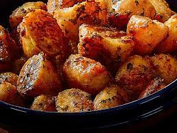

The Best Roast Potatoes!

Making the best Roasties
Roast potatoes are the staple of many a roast dinner and cooking them to perfection can sometimes be a case of trial and error.
Check out the steps below and you too can make roasties worthy of the greatest Roast dinners!
Ingredients
- 500g Lamb mince
- 1 medium red onion
- 1 tablespoon of red currant jam
- 1 tablespoon of Ketchup
- 1 sprig of rosemary - chopped
- 30g of bread crumbs
Steps
- Cut the onion in half. Dice one half and finely grate the other
- In a bowl, mix the lamb mince, bread crumbs and diced and grated onion
- Shape the mixture into a loaf shape on a lined baking tray, Mix the ketchup and the red currant jelly together and paint the meatloaf
- Sprinkle the meatload with the chopped rosemary and place into the oven for 45 mins
- Serve with your favourite vegetables